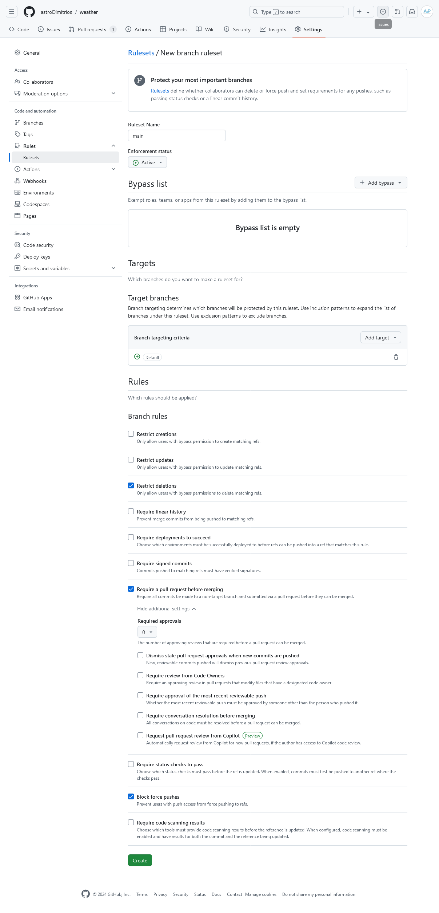

Pull requests are a great way to collaborate with others using GitHub. Instead of making changes directly to a repository you can suggest changes to a repository using a pull request.
Pull requests are where your changes go through the vital steps of code and science review. Some of these code and science checks can be completely automated using pull requests (PRs). This helps speed up the review process and reduce the chance of human error when checking new code.
Creating a Pull Request
In the previous episodes we developed our changes on the forecast branch. Let’s use a PR to merge these changes back into the main branch.
Navigate to your weather GitHub repo. You should see a notification appear with the text forecast had recent pushes.
Click on the green Compare & pull request button.

This page lets us create a new pull request from the forecast branch. The title has been autofilled with the message of the last commit. You can see all the commits on the branch at the bottom of this page.
Make sure the title and description are clear. Then press the green Create pull request button.
If your changes are not ready for review yet you can mark the pull request as a draft:

Draft pull requests can’t be merged and code reviewers aren’t automatically assigned.

Notice we’ve now moved to the Pull Requests tab. This is PR #1 and underneath the title we see:
wants to merge 4 commits into
mainfromforecast
If you need to change the title or the branch you’re merging into, in this case main, click on the edit button to the far right of the title.
The PR has four tabs below the title section:
- Conversation is where code and science reviews occur
- Commits shows all the commits we want to merge
- Checks shows the output from any automated code and science checks
- Files Changed shows a diff (difference) between the branch with your changes,
forecast, and the target branch,main.
At this point you should use the diff in the Files changed tab to check your changes.
Rulesets
GitHub Rulesets control how people can interact with your repository.
When we opened our first PR we were prompted to Require approval from specific reviewers before merging. Click on the Add rule button.
This page lets us create a rule preventing anyone from committing directly into the main branch. All repositories should have some form of protection using these rulesets. To add a rule to protect the main branch:
- Enter the Ruleset Name
main - Change the Enforcement status to
Active - Scroll down to Target branches. Click Add target and select Default branch (which in our
weatherrepo ismain). - Scroll down to Rules. Tick the Require a pull request before merging option.
- At the bottom of the page click the green Create button.
Now even if you commit to main locally you will not be able to push those changes to GitHub. To add changes you MUST open a PR and go through code and science review.

Private Personal Repos
Rulesets cannot be created on private repos in your personal space unless you have a paid GitHub plan.
Merging a Pull Request
Navigate back to your PR. To merge the PR click on the dropdown, and select Squash and merge. Squashing before merging will combine all the commits on your branch and ‘squash’ them into a single new commit on the target branch, in this case main. This helps keep the commit history of the main branch tidy and linear1.

Once you’ve selected the squash option click on the green Squash and merge button. Edit the commit title so that the PR number is at the start of the message. For instance:
Add in a forecast file (#1)Would be changed to:
#1 Add in a forecast fileThis makes it easier to navigate to the PR for a change when you’re on the GitHub repositories code view. Change the description if necessary. Then click on Confirm squash and merge.

The PR is now successfully merged into the main branch. We can safely delete the forecast branch from the GitHub repo. Click on the Delete branch button.
Updating your Local Repo
The new forecast.md file is currently only on the main branch in GitHub. We should pull the changes down to our local copy. Switch to the main branch:
$ git switch mainPull down the changes from GitHub:
$ git pullremote: Enumerating objects: 4, done.
remote: Counting objects: 100% (4/4), done.
remote: Compressing objects: 100% (2/2), done.
remote: Total 3 (delta 1), reused 2 (delta 1), pack-reused 0 (from 0)
Unpacking objects: 100% (3/3), 1.01 KiB | 173.00 KiB/s, done.
From github.com:mo-eormerod/weather
41c775b..49c845c main -> origin/main
Updating 41c775b..49c845c
Fast-forward
.gitignore | 2 ++
forecast.md | 9 +++++++++
2 files changed, 11 insertions(+)
create mode 100644 .gitignore
create mode 100644 forecast.mdgit pull and GitHub’s Pull Requests are not the same. GitHub Pull Requests are where we performed code and science review, then merged our feature branch changes into the main branch. git pull is fetching changes to the remote branch on GitHub and merging them into your local copy.
Cleaning up your Local Branches
We deleted our forecast dev branch from GitHub but we still have a local copy. Let’s tidy up by deleting it. To see all our branches including remote GitHub branches run:
$ git branch -avv forecast 13e0329 [origin/forecast] Ignore png files and the data folder
* main d1da035 [origin/main] #1 Add in a forecast file
remotes/origin/forecast 13e0329 Ignore png files and the data folder
remotes/origin/main d1da035 #1 Add in a forecast fileThe first two branches are our local branches, the last two are the GitHub remotes. To remove references to remote branches that have been deleted on GitHub run:
$ git remote prune originPruning origin
URL: git@github.com:mo-eormerod/weather.git
* [pruned] origin/forecastRunning git branch -avv again now shows:
forecast 13e0329 [origin/forecast: gone] Ignore png files and the data folder
* main d1da035 [origin/main] #1 Add in a forecast file
remotes/origin/main d1da035 #1 Add in a forecast fileYou can see the remote reference for the forecast branch has been removed. The second line with the local forecast branch now has gone in the brackets referencing the remote branch.
To delete our local branch run:
$ git branch -D forecastRunning git branch -avv again now shows:
* main d1da035 [origin/main] #1 Add in a forecast file
remotes/origin/main d1da035 #1 Add in a forecast fileYou’ve now successfully merged and tidied up after your first pull request. Remember when making changes create a new branch and open a PR, NEVER commit to the main branch.
Adding in a seasonal-forecast.md file
Try adding in a seasonal forecast using the following steps:
- Create a new branch with an appropriate name and switch to it
- Create the
seasonal-forecast.mdfile - Add and commit the new file
- Push the changes to GitHub
- Open a PR on GitHub
- Merge the PR, delete the branch on GitHub
- Pull down the changes to your local copy
- Tidy up your branches
Solution.
- Create a new branch with an appropriate name and switch to it
$ git switch -c add-seasonal-forecastSwitched to a new branch 'add-seasonal-forecast'- Create the
seasonal-forecast.mdfile
$ nano seasonal-forecast.md
$ cat seasonal-forecast.md# Seasonal Forecast
- Winter is wet
- Summer is hot- Add and commit the new file
$ git add seasonal-forecast.md
$ git commit -m "Add in a seasonal-forecast.md file"[add-seasonal-forecast aeaf804] Add in a seasonal-forecast.md file
1 file changed, 4 insertions(+)
create mode 100644 seasonal-forecast.md- Push the changes to GitHub
$ git pushEnumerating objects: 4, done.
Counting objects: 100% (4/4), done.
Delta compression using up to 4 threads
Compressing objects: 100% (3/3), done.
Writing objects: 100% (3/3), 326 bytes | 163.00 KiB/s, done.
Total 3 (delta 1), reused 0 (delta 0), pack-reused 0
remote: Resolving deltas: 100% (1/1), completed with 1 local object.
remote:
remote: Create a pull request for 'add-seasonal-forecast' on GitHub by visiting:
remote: https://github.com/mo-ormerod/weather/pull/new/add-seasonal-forecast
remote:
To github.com:mo-ormerod/weather.git
* [new branch] add-seasonal-forecast -> add-seasonal-forecast
branch 'add-seasonal-forecast' set up to track 'origin/add-seasonal-forecast'.- Open a PR as shown in this very episode!
- Merge the PR, delete the branch on GitHub
- Pull down the changes to your local copy
Switch to main:
$ git switch mainIf you want to check if there are changes to pull:
$ git fetchremote: Enumerating objects: 4, done.
remote: Counting objects: 100% (4/4), done.
remote: Compressing objects: 100% (2/2), done.
remote: Total 3 (delta 1), reused 2 (delta 1), pack-reused 0 (from 0)
Unpacking objects: 100% (3/3), 1010 bytes | 144.00 KiB/s, done.
From github.com:mo-ormerod/weather
49c845c..e4bdab8 main -> origin/mainThen merge the changes:
$ git pullUpdating 49c845c..e4bdab8
Fast-forward
seasonal-forecast.md | 4 +++
1 file changed, 4 insertions(+)
create mode 100644 seasonal-forecast.md- Tidy up your branches
$ git remote prune originPruning origin
URL: git@github.com:mo-ormerod/weather.git
* [pruned] origin/add-seasonal-forecast$ git branch -D add-seasonal-forecastDeleted branch add-seasonal-forecast (was aeaf804).Keypoints
- A pull request (PR) is where your changes go through code and science review.
- PRs can contain automated checks to help speed up the review process and avoid human error.
- The PR will automatically create an easy to read diff (difference) of the changes for the review (in the Files changed tab).
- Squashing and merging takes all the commits in your PR and ‘squashes’ them into a single new commit on the target branch.
git fetchfetches changes to the GitHub remote.git pullpulls and merges changes to the GitHub remote into your local copy.git branch -avvdisplays all your local branches including references to any remote branches.git remote prune originremoves references to remote branches that have been deleted on GitHub.